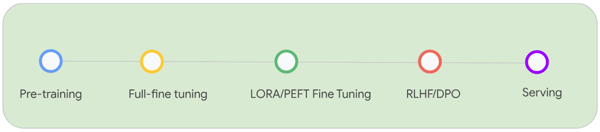

Steps to build a Model
 Fig1: Stages of LLM Model Development from pre-training to fine tuning and finally serving a model.
Model building starts with Pre-training a base model architecture. Pre-training is the process where you take a model architecture, which starts with random weights and train with a very large corpus in the scale of trillions of tokens. E.g. Google’s Gemma models were pre-trained on 6 Trillion tokens; LLama 3 was trained with 15 Trillion tokens
Post the pre-training most model producers will publish a checkpoint of the weights of the model. The corpus used for pre-training these models are usually a large public corpus like Common Crawl, public code bases, books etc.
Though these may be a great way to answer very general questions or prompts, they usually fail on very domain specific questions and answers like Medical and Life Sciences, Engineering, etc.
Customers and enterprises usually like to continue training a pre-trained model or performing a full fine tuning of the models using their own datasets. These datasets are usually in billions of tokens. This allows better prompt understanding when questions are asked on keywords and terms specific to their model or domain specific question.
Post a Full Fine Tuning, most models go through a process of Instruction Fine Tuning(PEFT/LoRA), Supervised Fine Tuning and RLHF to improve the model quality and follow prompt answers better.
PEFT/Lora, Supervised Finetuning are less expensive operations compared to full fine tuning.